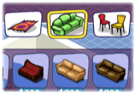

12 |
Catalogo |
 |
Nella parte superiore dello schermo troverai un Catalogo con una serie di linguette con mobili e oggetti diversi.
Qui ti è possibile vedere gli oggetti disponibili e acquistare oggetti per la stanza.
Per aprire una finestra del catalogo:  Punta il telecomando Wii verso la linguetta che ti interessa e premi il pulsante A.
Così facendo apri una finestra pop-up che mostra gli oggetti disponibili per la categoria prescelta.
Per scorrere le linguette e le finestre, premi i pulsanti + e - sul telecomando Wii.
Gli oggetti nuovi sono contraddistinti da un'icona "!" di colore verde. |
 Durante la partita, nel Catalogo si renderanno disponibili Nuovi oggetti.
Durante la partita, nel Catalogo si renderanno disponibili Nuovi oggetti. |
 |
 |